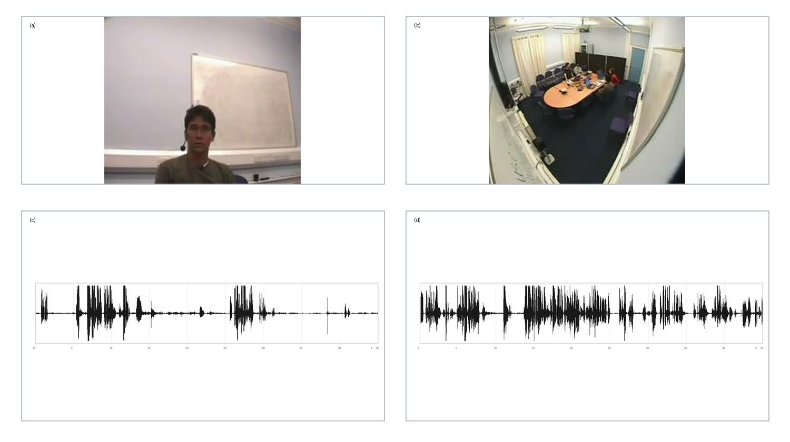

Real multimodal states
Raw AMI audio and video are represented with Kyutai Mimi and Wan2.1 Wan-VAE rather than placeholders.
A causally aligned, three-modal training pipeline for predicting the next text, audio, and video states from real multi-party meeting streams.
Preliminary results. This is an ongoing research project; the results reported here are preliminary and validation-only. The holdout set has not been touched, and no claim is made about full-scale generation quality.
The original system targets unified, low-latency text, audio, and video generation. Here, public components and a compact shared predictor are used to test the core causal contract under limited data and compute.
Raw AMI audio and video are represented with Kyutai Mimi and Wan2.1 Wan-VAE rather than placeholders.
Only already-visible user inputs and generated agent history can enter the current prediction.
Text, audio, and video losses all send finite, non-zero gradients into the same fusion state.
Predictions are fed back without future targets. Stable interfaces and failed capabilities are reported separately.
AMI provides synchronized headset audio, close-up video, room-view video, speaker identity, and word timing. Each participant is alternately treated as the agent while the other participants form the user side.

1,856 role views · 5.8000 unique hours
548 role views · 1.7125 unique hours
ES2014a–d signals remain unread
Train and validation share neither meetings nor participants. Corner video is a shared scene, not a user-only camera.
AMI media excerpt © AMI Consortium, presented with attribution under the corpus license; cropped and arranged for this research demonstration. Corpus source · CC BY 4.0
The implementation deliberately avoids reconstructing the undisclosed full-scale configuration. It asks a narrower question: can real text, codec, and VAE states share one valid next-state training path?
True previous states → current targets
Predicted states → the next model call
Means over seeds 7, 17, and 29 on AMI-medium validation. These numbers are diagnostic: they show that a shared causal training contract is learnable, not that generation quality is achieved. Read each row below as a claim about what the model uses — and what it does not yet do.
| Condition | CE ↓ |
|---|---|
| Correct causal context | 2.93 |
| Null user/history (baseline) | 4.89 |
| Shuffled context (baseline) | 6.31 |
Correct causal context wins in all three text-backbone seeds. The gain is attributable to the combined context, not user semantics alone.
Shows: the text head uses its causal context — removing it (4.89) or shuffling it (6.31) roughly doubles CE.
Does not show: user-driven understanding. CE 2.93 (perplexity ≈ 18.6) is about context use, not semantics of the user stream.
| Condition | Top-1 acc ↑ |
|---|---|
| Model | 15.99% |
| Copy previous codes (baseline) | 14.58% |
All three seeds beat copying the previous Mimi codes. User-audio sensitivity remains inconsistent.
Shows: a small but reproducible gain over the copy baseline (+1.4 pts, in all three seeds).
Does not show: learned audio generation — 16% top-1 sits close to copying, and user-audio sensitivity stays inconsistent.
| Condition | MSE ↓ |
|---|---|
| Model | 0.0087 |
| Copy previous state (baseline) | 0.0111 |
About 21% lower latent-space error than copy. Shared-scene removal or shuffling hurts all three seeds.
Shows: the video head uses the shared scene — corrupting it hurts all three seeds.
Does not show: perceptually meaningful motion generation — the reported value is latent-space MSE and cannot be converted directly to image-space PSNR; both the model and the copy baseline sit at small absolute errors.
How to read this section: the numbers above support a causal training contract — gradients from text, audio, and video all flow through one shared representation, and each head beats its copy or shuffle baseline. They deliberately do not claim generation quality; that is the question the next section stress-tests.
| Seed | Text CE ↓ | Audio top-1 ↑ | Video MSE ↓ | Checkpoint reload |
|---|---|---|---|---|
| 7 | 2.93485 | 16.188% | 0.008594 | 0 error |
| 17 | 2.93456 | 15.922% | 0.008535 | 0 error |
| 29 | 2.93481 | 15.847% | 0.009047 | 0 error |
| Mean | 2.93474 | 15.986% | 0.008725 | — |
Where the previous section checked the training contract, this one asks what happens when the model generates from its own predictions — the honest test. A frozen model, no retraining: six annotation-selected validation segments at 4, 8, 16, and 32 units. The media below is the preselected speech-start segment at 16 units (2.56 seconds), seed 7.
Feedback contract: predicted text, audio, and video re-enter the model from the second unit. Text loop: numerically stable, but repetitive and low-accuracy. Audio loop: collapsed — full-loop decode is 21.42 dB below target RMS. Video loop: stable at 2.56 s; degrades by 5.12 s.
The top row remains close because it receives true previous video states. In the lower row, self-predicted media is fed back; face and microphone artifacts become visible late in the clip. Persistent copy can look deceptively plausible because the source motion is small.
dB values are RMS relative to the target on this frozen representative segment. They measure energy collapse, not perceptual quality. Only one player is allowed to play at a time.
“Mm-hmm.” → “like, yeah, okay.” → “we're gonna have to do something” → “Okay, so we've got our…”
Content-token accuracy: 21.15%“Mm-hmm.” → “Yeah, okay. Um, yeah,” → “that's a good idea.” → “Yeah, that's a good idea.”
Content-token accuracy: 7.69%“Mm-hmm.” → “I'm gonna say, yeah, I” → “think I'm gonna say, yeah,” → “I'm gonna say, yeah, I…”
Content-token accuracy: 5.77%The rollout proves state feedback and target isolation. Repetition shows that it does not yet demonstrate natural free dialogue.
The aligned contract predicts zk → zk+1, not an earlier latent mislabeled as the current unit.
The last unit cannot supervise a future video state that does not exist.
Rollout cannot re-read ground-truth agent events that occur after its start.
Mimi codes and Wan latents match raw-prefix recomputation in 18/18 checks each.
Train and validation meetings and participants are disjoint; future holdout signals remain unread.
Tensor hashes and target mutation tests verify feedback without future-target dependence.
This page is a living record of a research prototype. The August 2026 report predates the S3.1 closed-loop diagnosis; the latest findings on this page supersede its “next step” paragraph.
Download report · PDF